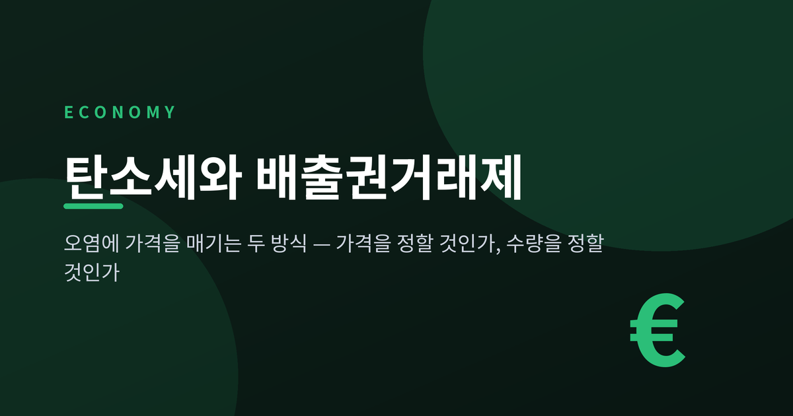
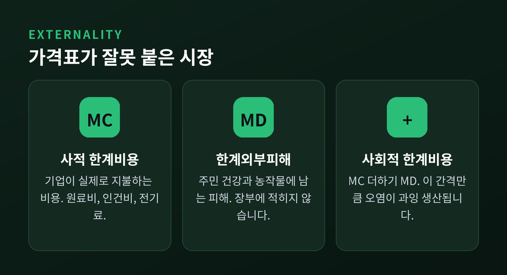
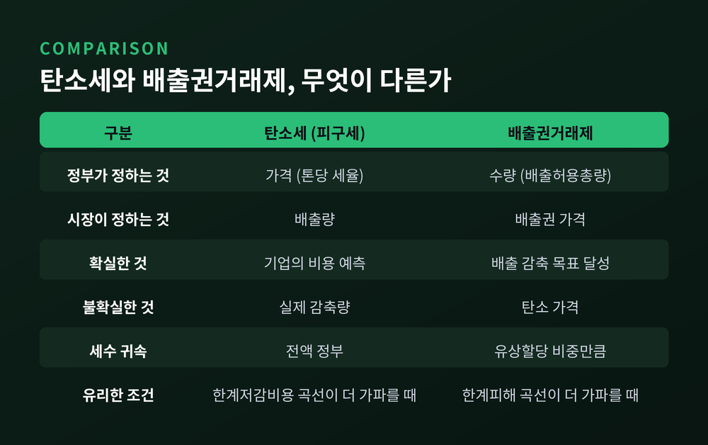
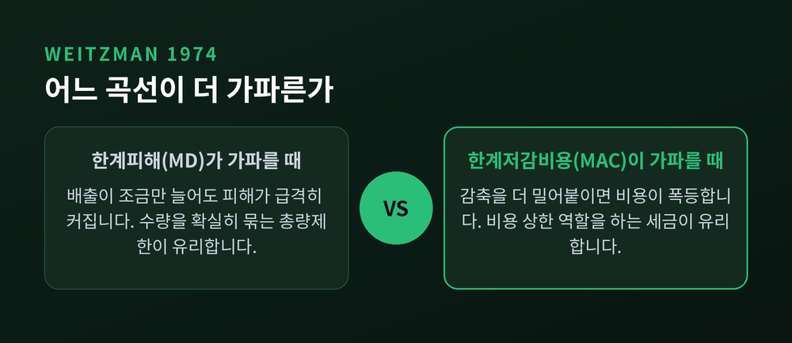
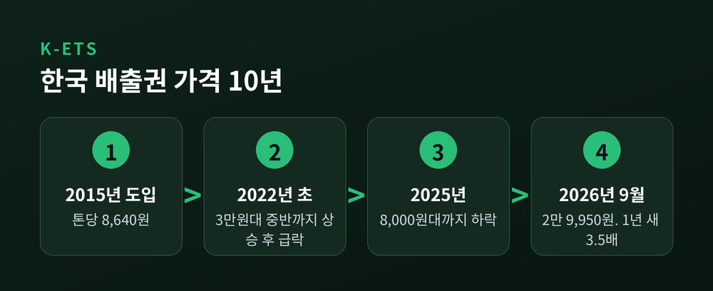
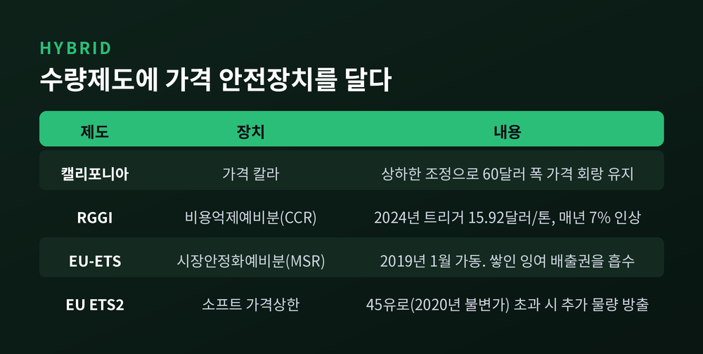
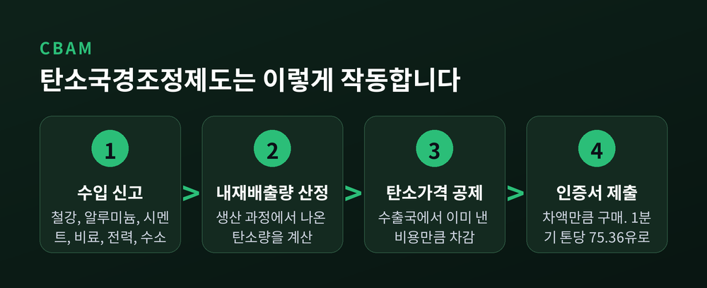

이번 글에서는 오염에 가격을 매기는 두 가지 방식을 정리해 보겠습니다. 하나는 세금을 매기는 피구세이고, 다른 하나는 배출 총량을 정해두고 그 권리를 사고팔게 하는 배출권거래제입니다. 겉보기엔 비슷한 목적을 가졌지만, 작동 원리와 남는 위험이 전혀 다릅니다.
경제학에서 오염을 다루는 출발점은 외부효과(externality)입니다.
공장이 물건을 만들 때 부담하는 비용은 원료비와 인건비, 전기료 정도입니다. 그런데 굴뚝에서 나온 연기는 인근 주민의 건강과 농작물에 피해를 줍니다. 이 피해는 공장의 회계장부 어디에도 적히지 않습니다.
기업이 마주하는 비용을 사적 한계비용(MC), 사회 전체가 실제로 치르는 비용을 사회적 한계비용(MC + MD)이라고 부릅니다. 여기서 MD는 한계외부피해입니다. 둘 사이의 간격만큼 기업은 싸게 생산하고, 그만큼 시장은 오염을 과잉 생산합니다.
이 개념을 정리한 사람이 영국 경제학자 아서 세실 피구입니다. 1920년 저서 『후생경제학』에서 스승 앨프리드 마셜의 외부효과 개념을 발전시켜, 부정적 외부효과에는 세금을, 긍정적 외부효과에는 보조금을 매기자고 제안했습니다.
핵심은 처벌이 아닙니다. 가격표가 잘못 붙어 있으니 바로잡자는 이야기입니다.

피구세의 설계는 단순합니다. 효율적 산출량 지점에서의 한계피해와 같은 금액(τ = MD at Q*)을 단위당 세금으로 매깁니다.
그러면 기업이 실제로 마주하는 비용은 MC가 아니라 MC + τ가 됩니다. 누가 강제하지 않아도 기업은 스스로 사회적으로 바람직한 수준까지 생산을 줄입니다. 이것을 외부효과의 내부화라고 부릅니다.
탄소세가 대표적인 사례입니다.
스웨덴은 1991년 톤당 250크로나(약 23유로)로 탄소세를 시작했습니다. 2026년 현재 세율은 톤당 1,520크로나, 약 134유로입니다. 35년에 걸쳐 여섯 배 가까이 올린 셈입니다.
장점은 명확합니다. 기업은 내년 탄소 비용이 얼마일지 알 수 있습니다. 설비 투자를 계획할 때 이보다 중요한 정보는 드뭅니다.
한계도 분명합니다. 세율을 정할 수는 있지만, 그 세율에서 배출량이 얼마나 줄어들지는 아무도 모릅니다. 스웨덴이 세율을 계속 올려온 것도 그래서입니다.
배출권거래제는 방향이 정반대입니다.
정부가 먼저 배출허용총량(cap)을 정합니다. 그 총량만큼 배출권을 발행해 기업에 나눠주거나 경매로 팝니다. 기업은 남으면 팔고 모자라면 삽니다.
거래가 허용되는 것이 이 제도의 핵심입니다. 감축 비용이 톤당 5천원인 기업과 5만원인 기업이 있다면, 싼 쪽이 먼저 줄이고 배출권을 팔면 됩니다. 사회 전체로 보면 같은 감축을 더 적은 비용으로 달성합니다.
장점은 배출량 목표가 확실히 지켜진다는 점입니다. 총량이 정해져 있으니까요.
대신 가격이 흔들립니다. 경기가 나빠져 공장이 덜 돌면 배출권 수요가 줄고 가격이 떨어집니다. 감축 유인도 함께 약해집니다.

그래서 둘 중 무엇이 나은가. 이 질문에 정면으로 답한 것이 마틴 와이츠먼의 1974년 논문 "Prices vs. Quantities"입니다. 4,000회 넘게 인용된 환경경제학의 기초 문헌입니다.
와이츠먼의 출발점은 이렇습니다. 규제자가 기업의 저감비용을 정확히 안다면, 세금과 수량규제는 완전히 같은 결과를 냅니다. 문제는 아무도 그 비용을 모른다는 데 있습니다.
이 불확실성 아래에서 두 도구는 다르게 실패합니다. 그리고 어느 쪽이 덜 실패하는지는 두 곡선의 기울기가 결정합니다.
한 가지 더 흥미로운 결론이 있습니다. 비용 쪽 불확실성은 도구 선택에 결정적이지만, 편익(피해) 쪽 불확실성은 두 도구가 서로 무관하다면 선택에 영향을 주지 않습니다.
온실가스는 대기에 축적된 총량이 문제이고 단년도 배출량의 한계피해는 비교적 완만하다고 보는 견해가 많습니다. 그래서 와이츠먼 기준상 탄소에는 가격규제가 유리하다는 해석이 통상적입니다. 다만 이는 모형 가정에 따라 달라지며, 카프와 트래거 같은 후속 연구자들이 계속 재검토하고 있습니다. 정답이 확정된 영역은 아닙니다.

이론은 이론이고, 실제 시장은 훨씬 거칠었습니다.
2005년, EU-ETS가 출범했습니다. 세계 최초의 대규모 온실가스 배출권 거래제입니다.
1기(2005~2007)는 실패에 가까웠습니다. 배출권을 너무 많이, 그것도 대부분 무상으로 나눠줬습니다. 게다가 다음 기간으로 이월(banking)하는 것도 막혀 있었습니다. 공급과잉이 쌓였고, 2007년 배출권 가격은 톤당 1.5유로 수준에서 사실상 0유로까지 무너졌습니다.
수량규제의 약점이 그대로 드러난 장면입니다. 배출 총량은 지켜졌지만 가격이 사라지면서 감축 유인도 함께 사라졌습니다.
EU는 이 경험을 반영해 2019년 1월 시장안정화예비분(MSR)을 가동했습니다. 유통 중인 배출권 수가 과도하게 쌓이면 일부를 예비분으로 흡수해 공급을 조절하는 장치입니다.
그 뒤로 가격은 자리를 잡았습니다. 2026년 흐름을 보면 이렇습니다.
2025~2026년 변동 범위는 톤당 60~95유로였습니다. 예전엔 0유로까지 떨어지던 시장이, 지금은 80유로 안팎에서 움직입니다.
한국은 2015년 1월 배출권거래제를 시작했습니다. 아시아 최초의 국가 단위 제도입니다.
그런데 오랫동안 가격이 오르지 않았습니다. 도입 당시 톤당 8,640원이었고, 2022년 초 3만원대 중반까지 올랐다가 다시 급락해 2025년에는 8,000원대까지 내려앉았습니다. 10년 동안 제자리걸음이었던 셈입니다.
2026년에 상황이 바뀌었습니다.
8월 한 달 상승률 13.5%로 아시아·태평양 주요 시장 가운데 가장 높았습니다. 1년 사이 234.7%, 약 3.5배 올랐습니다.
이유는 공급 쪽에 있었습니다. 제4차 계획기간(2026~2030)이 시작되면서 배출허용총량이 크게 줄었습니다. 연평균 기준으로 3차 6.02억 톤에서 4차 5.07억 톤으로, 15.7% 감소했습니다.
유상할당 비중도 확대됩니다. 발전 부문은 2026년 15%에서 2030년 50%까지 단계적으로 올라갑니다. 산업 등 나머지 부문은 10%에서 15%로 조정됩니다. 경매 수익은 약 27조원으로 추산되며, 탄소중립 설비 투자와 CCUS, 수소환원제철 등에 재투자한다는 계획입니다.
여기에 CBAM 대응을 위한 선취 매수세가 더해졌습니다.
다만 우려도 함께 나옵니다. 가격이 급등하는 동안 시장안정화 예비분의 발동 기준 마련은 지연되고 있다는 지적이 있습니다. 가격이 오른다고 다 좋은 것은 아닙니다. 예측 가능성이 없으면 기업은 투자 결정을 미룹니다.

교과서는 가격규제와 수량규제를 깔끔하게 나눕니다. 현실은 그렇지 않습니다.
순수한 캡앤트레이드는 가격 폭락과 폭등을 모두 겪습니다. 그래서 각국은 가격 칼라(price collar)를 도입했습니다. 하한과 상한을 함께 두어 가격이 일정 구간 안에서 움직이게 만드는 장치입니다.
정리하면 이렇습니다. 수량제도에 가격 안전장치를 붙이면 세금에 가까워지고, 세금에 배출 목표 연동 조정을 붙이면 수량제도에 가까워집니다. 순수한 피구세도, 순수한 캡앤트레이드도 현실에는 거의 없습니다.

한 나라만 탄소가격을 올리면 문제가 생깁니다. 공장이 규제가 느슨한 나라로 옮겨가는 탄소누출(carbon leakage)입니다. 배출은 줄지 않고 일자리만 빠져나갑니다.
EU의 답이 탄소국경조정제도(CBAM)입니다.
철강, 알루미늄, 시멘트, 비료, 전력, 수소를 EU로 수입할 때, 생산 과정에서 나온 탄소배출량만큼 CBAM 인증서를 사서 제출하게 하는 제도입니다. 인증서 가격은 EU 배출권 시장 가격을 그대로 따라갑니다. 1분기 톤당 75.36유로, 2분기 75.28유로로 정해졌습니다.
일정은 조정을 겪었습니다. 당초 2026년 1월 1일부터 인증서 구매 의무가 시작될 예정이었으나 2027년 2월 1일로 연기됐고, 연간 제출 기한도 5월 31일에서 9월 30일로 넉 달 늘었습니다. 소규모 수입업체 면제 기준을 연간 50톤 이하로 바꾸면서 기존안 대비 약 90%의 수입업체가 적용 대상에서 빠질 것으로 예상됩니다.
한국 기업에 중요한 지점은 여기입니다.
CBAM은 EU 탄소가격과 수출국 탄소가격의 차액을 메우는 구조입니다. 한국에서 이미 낸 탄소 비용은 공제받습니다. 즉 국내 탄소가격이 낮을수록 그 차액만큼을 EU에 내야 합니다.
2026년 9월 기준으로 EU 배출권은 80유로대, 한국 배출권은 3만원대입니다. 격차가 여전히 큽니다. 국내 탄소가격이 낮으면 기업 부담이 줄어드는 것처럼 보이지만, 수출 기업 입장에서는 그 차액이 국내 재정이 아니라 EU 재정으로 넘어가는 셈입니다.

세계은행 『State and Trends of Carbon Pricing 2026』 기준으로 정리하면 이렇습니다.
제도 수는 탄소세가 더 많지만, 돈이 움직이는 규모는 배출권거래제가 압도적입니다. 수입은 여전히 유럽과 북미에 집중돼 있고, 중·저소득국은 가격이 낮고 경매도 제한적이라 수입이 훨씬 적습니다.
아직 전 세계 배출량의 3분의 1에도 미치지 못합니다. 갈 길이 멉니다.
끝으로 한 마디만 더 드리겠습니다.
피구세와 배출권거래제 중 무엇이 옳은지를 따지는 것은 생각보다 중요하지 않을지 모릅니다. 와이츠먼의 기준은 여전히 유효하지만, 현실의 제도들은 이미 양쪽을 섞어 쓰고 있습니다. 가격 칼라를 단 배출권 시장은 절반쯤 세금이고, 배출 목표에 연동해 세율을 조정하는 탄소세는 절반쯤 수량규제입니다.
정말 중요한 것은 다른 데 있어 보입니다.
EU가 2007년의 0유로에서 2026년의 80유로대까지 오는 데 20년이 걸렸습니다. 한국도 10년의 정체 끝에 이제 막 3만원 선에 올라섰습니다. 숫자가 오르는 것보다 그 숫자를 기업이 예측할 수 있게 되는 일이 더 어렵습니다.
오염에 가격을 매기는 일이 결국 성공할 것이냐고 물으신다면, 아직은 지켜보는 중이라고 답하겠습니다.